📊 指标均值 · 清晰呈现本类素材基准指标，帮你快速定位差距，校准优化方向
消耗(均值)
—增长量(均值)
—CTR (均值)
4.61%CVR (均值)
9.42%3s完播 (均值)
72.0%播放时长(均值)
43.2s📚 方法论沉淀 · 拆解开篇类型核心打法，吃透爆款底层逻辑，轻松拿捏创作节奏
🎬开篇方式细分· 还原头部素材的爆款开篇套路，直接参考高起量创作范式（推荐指数=消耗量级）
两性冲突类剧情⭐⭐⭐⭐⭐
以夫妻争吵、情侣矛盾、被嫌弃等两性关系冲突开篇，通过『有皱纹不要叫我老公』等台词直击外貌焦虑痛点，消耗量级高且用户共鸣强
身份错位类剧情⭐⭐⭐⭐
通过误认岳母为妻子、保姆被当成年轻妈妈等身份错位制造反差笑点，用逆龄效果悬念自然引出产品功效
职场反差类剧情⭐⭐⭐⭐
以老板娘巡视公司、面试场景等职场情境切入，通过发现员工皮肤好的好奇心驱动产品植入，适合30+职场女性
猎奇悬疑类剧情⭐⭐⭐⭐⭐
用深夜剪头发、地铁奇遇、老爷爷与比基尼美女等猎奇场景制造强停留，3s完播率高但需把控尺度
逆袭变身类剧情⭐⭐⭐
被前任嫌弃、被嘲讽邋遢后通过产品实现形象蜕变逆袭，满足用户变美愿望的情感投射
善恶反转类剧情⭐⭐⭐
通过老人摔倒测人心、100万租老婆等善恶对比剧情制造戏剧张力，产品作为奖励或逆袭工具植入
📋脚本框架· 标准化脚本流程拆解，素材组合直接照着用，降低创作试错成本（6 段）
A
剧情冲突开篇
⏱ 0-10s
通过夫妻矛盾、姐弟恋悬念、家庭伦理冲突等剧情制造情感共鸣，快速抓住用户注意力完成3秒停留
📌 夫妻争吵嫌弃场景/姐弟恋年龄反差对话/第三者出现冲突/老人摔倒测试人性，配合悬念字幕钩子如『没想到他的目的是……』
B
痛点激化展开
⏱ 10-45s
通过角色台词直击中老年女性容貌焦虑，强化皱纹眼袋松垮等核心痛点，为产品植入做铺垫
📌 『脸都垮了』『眼袋大嫌丢人』『满脸皱纹黄脸婆』等嫌弃台词，照镜自卑、被冷落被嘲讽等情节演绎
C
产品自然植入
⏱ 45-80s
通过剧情角色推荐或意外发现等方式自然引出产品，建立产品与逆袭变美的强关联
📌 助理/女儿/闺蜜推荐产品、保姆意外洒油、收拾房间发现抗皱霜、董事长赠送产品作为奖励等自然植入桥段
D
明星达人背书
⏱ 80-150s
通过明星口播推荐和多位达人实测证言建立产品信任度，强化品牌权威性和效果可信度
📌 于震/刘晓庆/王琳/赵雅芝等明星出镜推荐，强调『这辈子唯一站台』『以声誉担保』，穿插街头采访素人好评
E
卖点效果轰炸
⏱ 150-220s
密集输出产品核心卖点和使用效果对比，通过视觉奇观和成分背书完成深度种草
📌 涂抹即起泡视觉特效/半脸对比效果/50年国货老品牌/植萃精华成分展示/工厂生产线品控画面/多年龄段用户效果展示
F
促销福利收割
⏱ 220s-结尾
通过限时折扣、买赠机制、库存紧张等促销信息制造紧迫感，配合剧情反转收尾引导下单转化
📌 周年庆一折/拍一发二/39.9两瓶/工厂直发/限时抢购/妻子华丽变身惊艳全场完成剧情闭环，主播催单引导直播间下单
☁️核心词云· 提炼高频重点标签，靠前标签即高机会，快速抓准流量密码（话题）
🎬 话题 · 20 词
夫妻矛盾皱纹眼袋姐弟恋第三者同学聚会黄脸婆逆袭变美婆媳关系替嫁苦情扶老人继母被嫌弃闺蜜挑衅保姆董事长面试KTV暧昧年龄反差华丽变身霸气护妻
💬常见爆款话术· 整理高转化爆款话术，直接复用提升素材起量率与吸引力（≥2 条素材出现，产品名已隐藏）
🚀跑量关键点· 跑量必备要素清单，逐项 check，确保创作不踩坑
- **痛点即共鸣**：用被嫌弃、被嘲讽等情感冲突戳中容貌焦虑，让用户代入共情
- **反转即种草**：在剧情高潮反转点植入产品，用效果反差完成自然种草
- **信任即转化**：明星背书+素人证言+工厂实拍三重信任链，配合限时促销促下单
📈高光时序数据· 近 7 天日均真实播放进度数据
36/39 条素材有高光时序（覆盖率 92.3%）；关键转化点主要集中在 30s+。点击/点赞/转发/流失关键点分别为 93/31/26/47 个。
内容策略与转化表现
内容承接
正向 53 · 流失 17 · 平均 42.3s
点击 25 / 点赞 20 / 转发 8 / 流失 17
点击 25 / 点赞 20 / 转发 8 / 流失 17
“(妻子华丽变身出场) 爸爸：『哇！』”
价格促销
正向 35 · 流失 4 · 平均 101.7s
点击 28 / 点赞 0 / 转发 7 / 流失 4
点击 28 / 点赞 0 / 转发 7 / 流失 4
“达人：『谁能拒绝一年一次的一折闪充胶原棒呢？你就买一支回去试试，不用调不用配，洗完脸直接涂』”
口碑证明
正向 34 · 流失 5 · 平均 96.4s
点击 27 / 点赞 1 / 转发 6 / 流失 5
点击 27 / 点赞 1 / 转发 6 / 流失 5
“达人：『为了参加儿子家长会，用了一星期的谷雨山参胶原棒，同学妈妈都以为我才20出头』”
功效卖点
正向 23 · 流失 8 · 平均 96.5s
点击 16 / 点赞 2 / 转发 5 / 流失 8
点击 16 / 点赞 2 / 转发 5 / 流失 8
“于震：『95岁以下用了它，你脸上要是有这一条线还挂着大眼袋的，我于震直接给你注意了』(明星口播+效果对比画面)”
实测演示
正向 23 · 流失 12 · 平均 84.3s
点击 16 / 点赞 2 / 转发 5 / 流失 12
点击 16 / 点赞 2 / 转发 5 / 流失 12
“达人：『谁能拒绝一年一次的一折闪充胶原棒呢？你就买一支回去试试，不用调不用配，洗完脸直接涂』”
信任背书
正向 19 · 流失 3 · 平均 120.0s
点击 14 / 点赞 0 / 转发 5 / 流失 3
点击 14 / 点赞 0 / 转发 5 / 流失 3
“于震：『95岁以下用了它，你脸上要是有这一条线还挂着大眼袋的，我于震直接给你注意了』(明星口播+效果对比画面)”
- 内容可解释率 100.0%：197/197 个关键点匹配到对应脚本或结构文案。
- 正向转化最强的是「内容承接」：出现 53 个点击/点赞/转发关键点，平均发生在 42.3s；典型内容“(妻子华丽变身出场) 爸爸：『哇！』”。
- 主要流失风险来自「内容承接」：对应 17 个流失关键点，平均发生在 37.2s；需优先压缩或改写“上海王奶奶：『我真的忘不了于震的恩情。』”。
关键点内容证据
8515f2fc · 157.0s · 流失最大流失点（142.7）用户在此大量划走
26a959a3 · 21.0s · 流失最大流失点（142.3）用户在此大量划走
c8159c5b · 29.0s · 点击点击峰值（142.3）
e21c199b · 143.0s · 流失最大流失点（142.3）用户在此大量划走
d233be7e · 116.0s · 流失最大流失点（142.1）用户在此大量划走
c4c50415 · 23.0s · 流失最大流失点（141.7）用户在此大量划走
d167cee9 · 138.0s · 流失最大流失点（141.4）用户在此大量划走
777a48e3 · 98.0s · 流失最大流失点（141.1）用户在此大量划走
🏆 代表素材关键帧拆解 · 品牌 / 非品牌各 Top5（按消耗降序）
🏪 品牌素材 Top5（按消耗降序）

#1
消耗 — · 增长量 — · CTR 4.15% · CVR 12.33% · 3s完播 65.0% · 播放时长 34.1s
🎂 转化人群年龄分布 主力 50+
40- 7.4%40-50 32.4%50+ 60.2%
19-24 0.2%25-29 0.3%30-34 1.2%35-39 5.7%40-44 13.5%45-49 18.9%50-54 23.2%55-59 18.9%60-64 11.4%65+ 6.7%
开篇类型属于家庭冲突剧情反转+明星达人背书型。开篇以小女孩怒斥副驾女子的家庭冲突剧情制造悬念，第三者嘲讽妻子『脸都垮了』点明抗衰痛点。妻子回家准备逆袭，引出某品牌固态胶原棒产品。接着切入多位达人实测混剪，展示法令纹、抬头纹等细纹淡化效果，配合秦岚、肖涵等明星同款背书建立信任。重点强调『口红旋转黑科技』『一支顶水乳面霜精华』等差异化卖点。结尾妻子华丽变身惊艳全场，呼应开篇剧情完成反转，引导进入直播间购买。

剧情冲突开篇
0-10s

痛点激化
10-47s

产品亮相
48-60s

达人种草
60-140s

卖点轰炸
140-165s
#2
消耗 — · 增长量 — · CTR 3.03% · CVR 13.40% · 3s完播 78.9% · 播放时长 31.6s
🎂 转化人群年龄分布 主力 50+
40- 3.5%40-50 31.8%50+ 64.8%
35-39 3.5%40-44 11.0%45-49 20.8%50-54 24.8%55-59 19.0%60-64 11.8%65+ 9.1%
开篇类型属于情侣反转剧情+明星背书型。开篇以情侣在某品牌门店前争吵的剧情切入，女生坚持要买淡纹胶原棒，男生从不解到听闻『买一送一』后态度反转，快速建立产品高性价比认知。接着快速混剪李沁、何泓姗、秦岚等明星推荐切片，强调『七夕福利三折』制造紧迫感。中段切入健身房达人和居家博主的真实分享场景，通过『眉间纹显老显凶』等痛点引出产品功效。重点展示山参胶原精华棒的成分动画和使用演示，强调『以油养眼』『一支搞定全脸』等核心卖点。结尾以『拍二发四』的促销信息收尾，精准召唤30+姐妹下单。
剧情悬念开场
0-12s
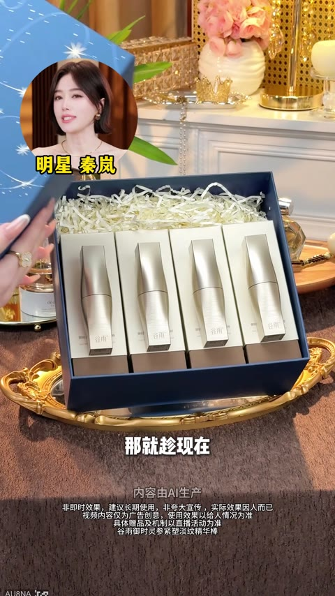
明星背书
13-28s
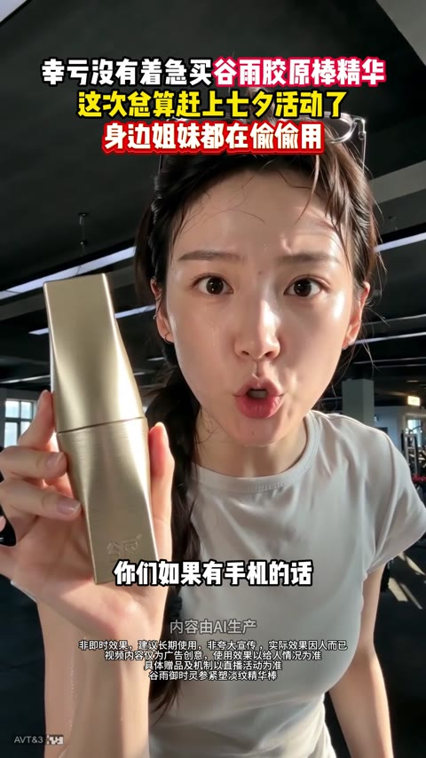
达人种草
29-39s
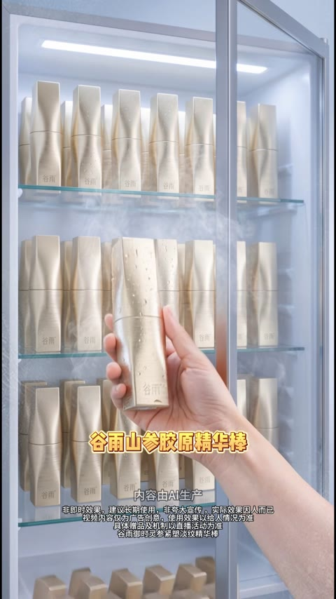
痛点引入
40-50s
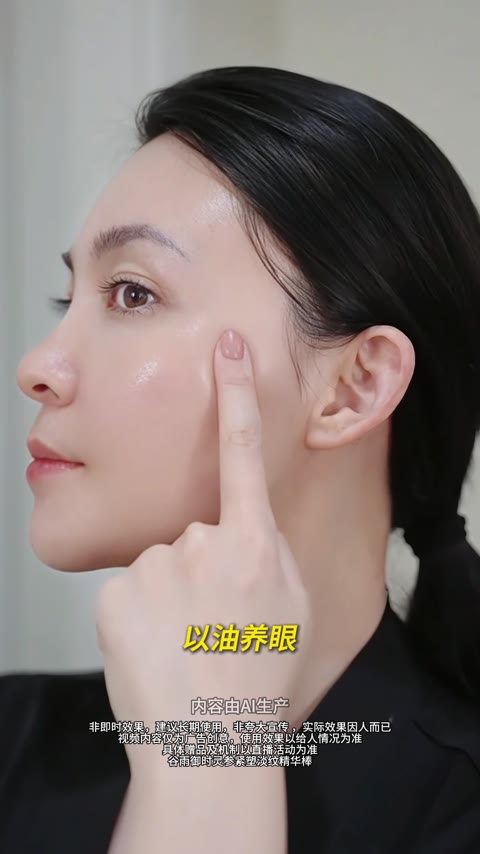
卖点轰炸
51-68s
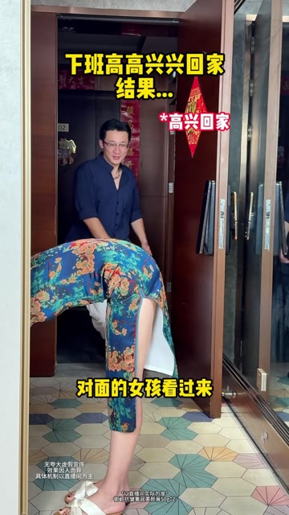
#3
消耗 — · 增长量 — · CTR 1.68% · CVR 8.22% · 3s完播 73.4% · 播放时长 22.0s
🎂 转化人群年龄分布 主力 40-50
40- 29.1%40-50 50.6%50+ 20.3%
0-13 0.2%14-18 0.1%19-24 0.3%25-29 0.7%30-34 4.7%35-39 23.2%40-44 28.7%45-49 21.9%50-54 12.2%55-59 5.3%60-64 2.0%65+ 0.9%
开篇类型属于两性冲突剧情+婆媳关系反转型。开篇以丈夫下班回家误认岳母为妻子的尴尬剧情切入，制造悬念与笑点。接着丈夫嫌弃妻子妆容不精致，岳母出场安慰并引出产品『某品牌贵妇霜』，现场演示涂抹效果。重点展示产品核心卖点：人参皂苷CK成分、边上妆边养肤、30秒成膜不脱妆等，穿插多位不同年龄女性的使用证言强化信任。结尾通过『系统出bug』『买一送一』『还有半小时』等促销话术制造紧迫感，引导用户立即下单抢购。
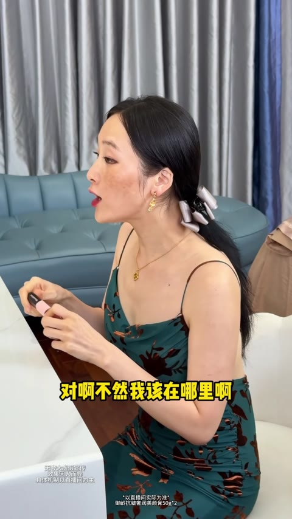
剧情悬念开场
0-13s
痛点冲突引入
14-29s
产品自然植入
30-46s
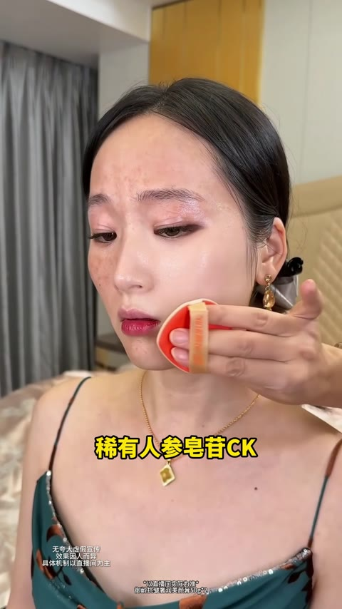
卖点功效展示
47-57s
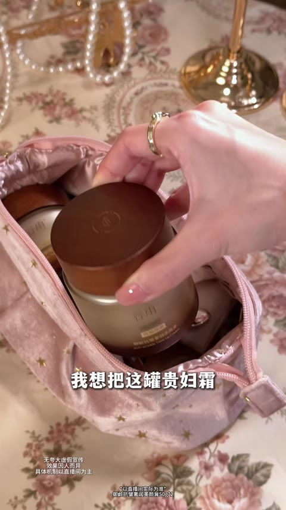
多人证言背书
58s-1m13s
#4
消耗 — · 增长量 — · CTR 1.27% · CVR 8.12% · 3s完播 62.5% · 播放时长 13.7s
🎂 转化人群年龄分布 主力 50+
40- 9.9%40-50 43.5%50+ 46.5%
0-13 0.1%14-18 0.0%19-24 0.3%25-29 0.4%30-34 1.5%35-39 7.6%40-44 17.3%45-49 26.3%50-54 21.7%55-59 13.8%60-64 8.3%65+ 2.8%
开篇类型属于剧情反转+多博主证言型。开篇以姐弟恋约会场景制造话题悬念，50岁女性与22岁男性的年龄反差引发好奇，男主拿出某品牌贵妇霜并提及秦岚同款完成产品植入。接着多位女性博主接力展示产品卖点，强调多效合一可替代粉底液、夏天不脱妆、无需卸妆等核心功效。重点通过『虽然贵但解决问题』的话术建立高端定位，展示干燥起皮、松垮暗沉等痛点被解决的效果。加入街头采访和仓库抢购场景营造热销氛围，最后以直播间5折大促引导下单转化。
剧情悬念开场
0-6s
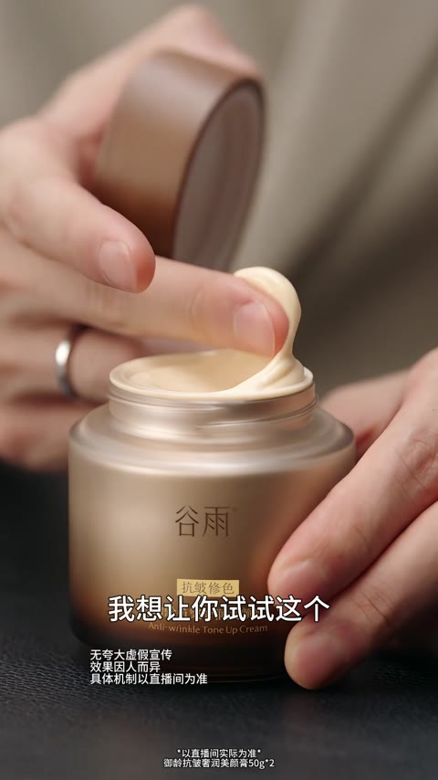
产品植入
6-14s
卖点轰炸
14-37s
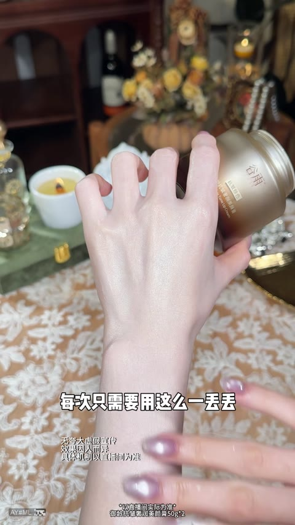
痛点+效果
37-68s
用户证言
68-83s
#5
消耗 — · 增长量 — · CTR 3.41% · CVR 15.28% · 3s完播 93.9% · 播放时长 48.9s
🎂 转化人群年龄分布 主力 50+
40- 12.1%40-50 27.5%50+ 60.4%
14-18 0.2%19-24 0.4%25-29 1.0%30-34 3.7%35-39 6.8%40-44 13.2%45-49 14.3%50-54 13.3%55-59 13.7%60-64 14.7%65+ 18.7%
开篇类型属于剧情反转+达人种草+明星背书型。开篇用『儿子误认妈妈为媳妇』的悬念剧情制造反差冲击，引出产品的逆龄功效。接着切换到年轻情侣床上讨论『39元10支』的超低价格，强化性价比。随后展示超市抢购场景和短剧女王乔七月、明星温峥嵘的推荐切片，建立品牌信任。重点展示撕拉面膜的使用过程和水光肌效果对比，突出5D胶原和8D玻尿酸的核心成分卖点。结尾由主播在直播间展示产品套装和赠品组合，用『拍一发十』『拍三发二十』的福利机制引导下单转化。
剧情悬念开篇
0-6s
价格引爆
6-16s
场景佐证
16-26s
明星背书
26-42s
产品演示
42-70s
🏬 非品牌素材 Top5（按消耗降序）

#1
消耗 — · 增长量 — · CTR 3.61% · CVR 5.93% · 3s完播 79.0% · 播放时长 33.6s
🎂 转化人群年龄分布 主力 50+
40- 2.5%40-50 5.4%50+ 92.1%
0-13 0.5%19-24 0.3%25-29 0.3%30-34 0.5%35-39 0.8%40-44 1.6%45-49 3.8%50-54 8.5%55-59 13.8%60-64 19.4%65+ 50.5%
开篇类型属于情感冲突剧情+明星背书型。开篇通过公园老夫妻矛盾剧情，用『眼袋大嫌丢人』的台词直击中老年女性被嫌弃的情感痛点。接着医生角色出场为老奶奶涂抹眼油，完成产品植入。重点展示于震、王琳两位明星的推荐背书，于震强调『这辈子没给任何产品站过台唯独这次破例』增强信任。穿插街头采访素人好评和使用前后对比效果，配合灵芝人参等成分展示与50年国货品牌背书。结尾以『拍一发二』『买正装送正装』的促销信息收尾，引导进入直播间下单。

剧情痛点开篇
0-7s

产品植入
7-13s

明星背书
13-32s

用户证言
25-32s

卖点轰炸
32-47s

#2
消耗 — · 增长量 — · CTR 3.66% · CVR 2.84% · 3s完播 60.2% · 播放时长 13.9s
🎂 转化人群年龄分布 主力 50+
40- 7.2%40-50 33.2%50+ 59.6%
25-29 0.4%30-34 1.1%35-39 5.8%40-44 12.0%45-49 21.3%50-54 21.0%55-59 17.5%60-64 11.3%65+ 9.7%
开篇类型属于剧情反转+达人种草型。开篇通过泳池边母子冲突剧情制造悬念，年轻男性嫌弃年长女性『老』，随即用金色面膜贴在女性脸上化解矛盾。接着通过脚踝皱纹处贴敷前后对比，展示产品吸附污垢、平滑皱纹的效果。中段切入美容达人场景，强调产品爆款热销、警惕仿品，并详细讲解正品包装辨别方法。后段年轻女模特演示免清洗使用流程，展示肌肤透亮效果。结尾通过七夕宠粉活动『拍一发12』的超值促销信息，配合产品堆叠画面强势引导下单。

剧情悬念开篇
0-6s

产品植入
6-12s

效果对比
12-17s

达人种草
17-25s

防伪说明
25-45s
#3
消耗 — · 增长量 — · CTR 4.72% · CVR 4.25% · 3s完播 71.1% · 播放时长 67.3s
🎂 转化人群年龄分布 主力 50+
40- 2.9%40-50 13.3%50+ 83.9%
30-34 0.8%35-39 2.1%40-44 4.1%45-49 9.1%50-54 21.5%55-59 27.9%60-64 22.9%65+ 11.7%
开篇类型属于剧情反转+明星背书型。开篇以保姆不小心把眼油蹭到女主人手上的冲突制造悬念，配合『擦掉竟然……』的钩子文案吸引停留。接着在幼儿园接孩子时，老师误认保姆为妈妈、孩子也更亲近保姆，形成强烈身份反转冲击。女主人偷用眼油后状态逆转，孩子重新投入怀抱，剧情圆满收场。随后切入于震、王琳、李若彤等明星背书，强调眼袋、细纹、松弛等功效，穿插街头采访和用户证言增强可信度。结尾以周年庆促销、买一送多引导下单转化。
剧情悬念开篇
0-3s
身份反转冲突
3-50s
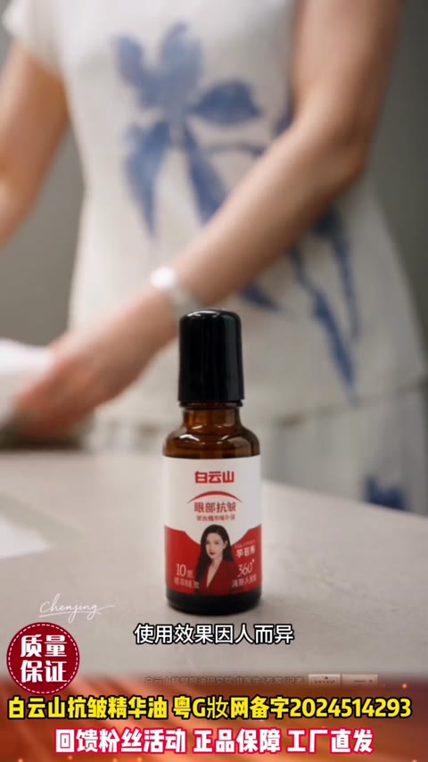
产品效果揭秘
50-100s
剧情收尾升华
100-160s
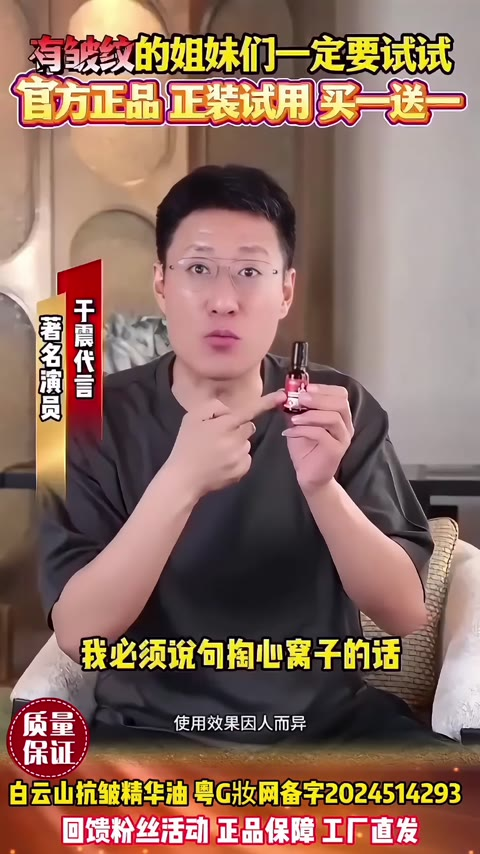
明星背书
160-210s
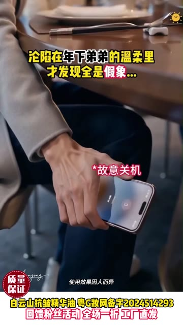
#4
消耗 — · 增长量 — · CTR 4.65% · CVR 9.82% · 3s完播 70.6% · 播放时长 47.8s
🎂 转化人群年龄分布 主力 50+
40- 1.6%40-50 9.9%50+ 88.5%
30-34 0.4%35-39 1.1%40-44 2.7%45-49 7.2%50-54 19.6%55-59 27.7%60-64 26.8%65+ 14.5%
开篇类型属于姐弟恋反转剧情+明星背书型。开篇以年下男故意关机让姐姐买单的剧情制造悬念，随后男方在朋友面前嘲讽女方眼袋大、只为升职才交往，精准戳中眼部衰老痛点。女主听到真相后决定反击，自然引出白云山眼部精华油。中段由于震以推荐官身份背书，强调产品对眼袋、法令纹、川字纹的功效，配合王琳素颜实测和多地用户证言增强可信度。结尾强调50年老品牌实力，以『拍一发二』的限时福利促进转化下单。
剧情悬念开篇
0-12s
痛点引爆
12-40s
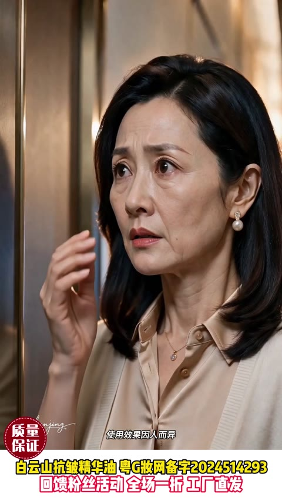
情感回忆
40-108s
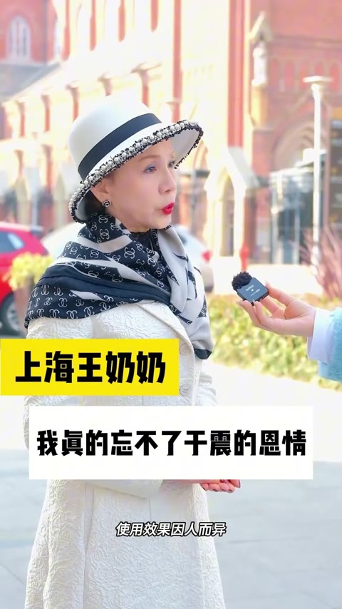
明星背书
108-144s
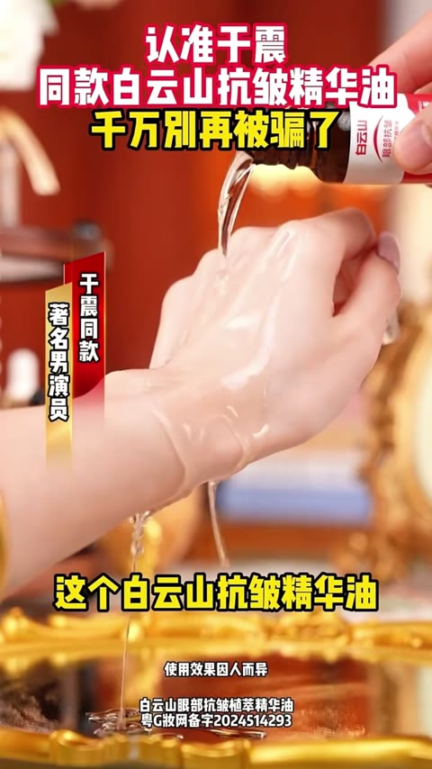
用户证言
144-175s
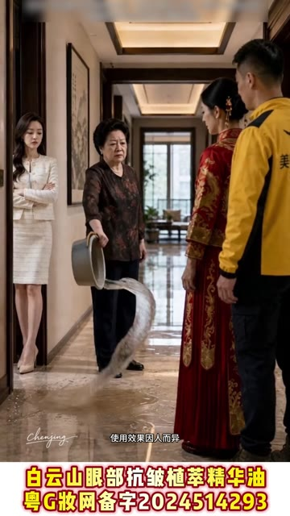
#5
消耗 — · 增长量 — · CTR 3.47% · CVR 13.79% · 3s完播 74.1% · 播放时长 51.5s
🎂 转化人群年龄分布 主力 50+
40- 0.7%40-50 2.2%50+ 97.1%
35-39 0.7%40-44 0.7%45-49 1.5%50-54 6.4%55-59 16.0%60-64 25.3%65+ 49.4%
开篇类型属于苦情短剧反转+明星背书型。开篇以『替嫁』苦情剧情切入，姐姐被继母泼水羞辱后嫁给『外卖员』，制造强烈情感共鸣。接着反转揭示男主是富二代，场景切换至豪宅。痛点环节通过姐姐照镜自卑『脸松垮皱纹多』引出产品需求。助理适时推荐白云山抗皱眼油，展示紧致淡纹、保湿润肤等卖点。使用后姐姐换装惊艳亮相，丈夫夸赞『白白嫩嫩』完成效果验证。后半段切入街头采访和明星于震、王琳的推荐背书，强调50年国货品牌和天然成分。结尾以周年庆一折、买一送一的促销福利引导下单转化。
剧情开篇
0-27s
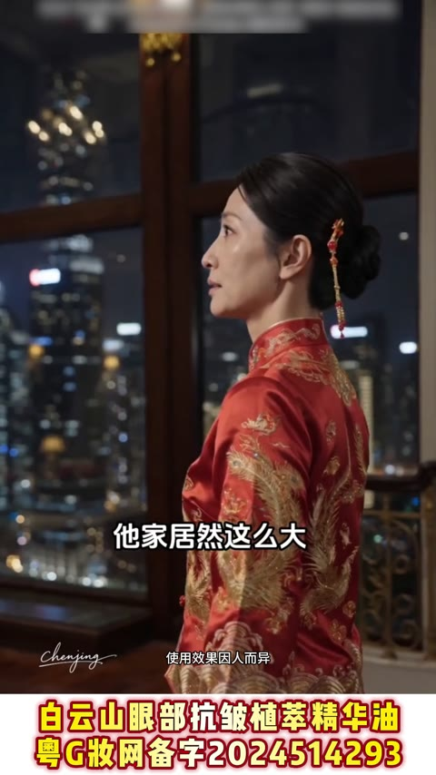
剧情反转
27-67s
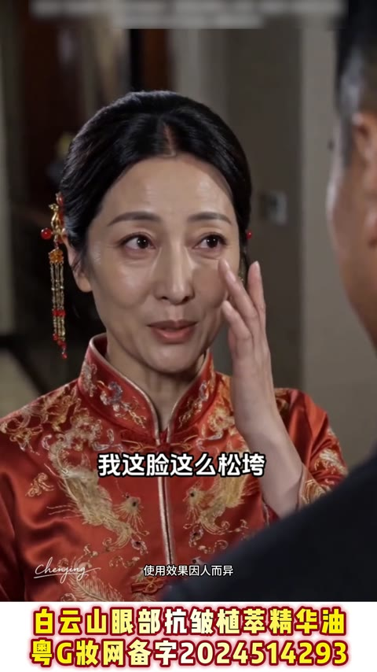
痛点引入
67-77s
产品亮相
77-89s
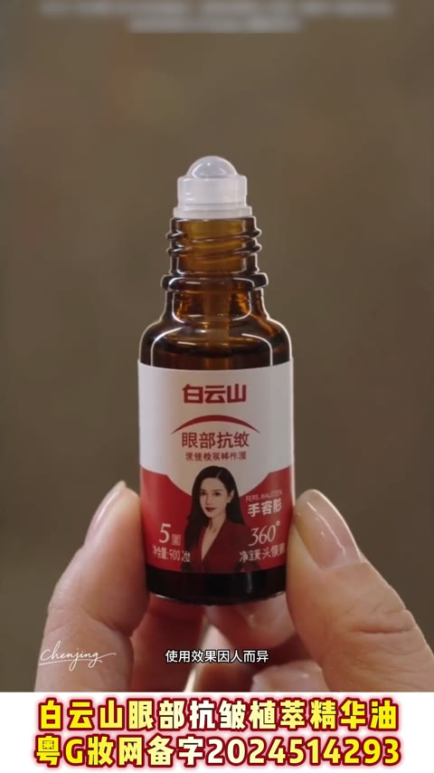
产品演示
89-104s